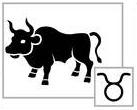
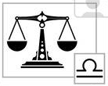
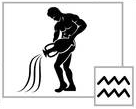

Free Horoscope Predictions and Free Astrology Forecasts
Please click one of the buttons that best suits you

(Mar 21 - Apr 19)
Aries:
Investigate and explore your surroundings. It would be suitable for you to love after 40 and to care for actual love. Before this point, you undergo different experiences to prepare yourself to find magnificent, mature, and lifelong love. Further, it is true in case you have not fallen in love with someone earlier, selected wrong life partner time and again, already have hundreds of worthless dating, or ignored by your previous three loves. It is the right time to find such a relationship that matches your personal desires and necessities at this thrilling spot in your life. What is needed for full-grown individuals to recognize what they wish and how to get the same? Following tips would assist you to find a faithful mate and a real companion:

(Apr 20 - May 20)
Taurus:
Investigate and explore your surroundings. It would be suitable for you to love after 40 and to care for actual love. Before this point, you undergo different experiences to prepare yourself to find magnificent, mature, and lifelong love. Further, it is true in case you have not fallen in love with someone earlier, selected wrong life partner time and again, already have hundreds of worthless dating, or ignored by your previous three loves. It is the right time to find such a relationship that matches your personal desires and necessities at this thrilling spot in your life. What is needed for full-grown individuals to recognize what they wish and how to get the same? Following tips would assist you to find a faithful mate and a real companion:

(May 21 - Jun 20)
Gemini:
Investigate and explore your surroundings. It would be suitable for you to love after 40 and to care for actual love. Before this point, you undergo different experiences to prepare yourself to find magnificent, mature, and lifelong love. Further, it is true in case you have not fallen in love with someone earlier, selected wrong life partner time and again, already have hundreds of worthless dating, or ignored by your previous three loves. It is the right time to find such a relationship that matches your personal desires and necessities at this thrilling spot in your life. What is needed for full-grown individuals to recognize what they wish and how to get the same? Following tips would assist you to find a faithful mate and a real companion:

(Jun 21 - Jul 22)
Cancer:
Investigate and explore your surroundings. It would be suitable for you to love after 40 and to care for actual love. Before this point, you undergo different experiences to prepare yourself to find magnificent, mature, and lifelong love. Further, it is true in case you have not fallen in love with someone earlier, selected wrong life partner time and again, already have hundreds of worthless dating, or ignored by your previous three loves. It is the right time to find such a relationship that matches your personal desires and necessities at this thrilling spot in your life. What is needed for full-grown individuals to recognize what they wish and how to get the same? Following tips would assist you to find a faithful mate and a real companion:

(Jul 23 - Aug 22)
Leo:
Investigate and explore your surroundings. It would be suitable for you to love after 40 and to care for actual love. Before this point, you undergo different experiences to prepare yourself to find magnificent, mature, and lifelong love. Further, it is true in case you have not fallen in love with someone earlier, selected wrong life partner time and again, already have hundreds of worthless dating, or ignored by your previous three loves. It is the right time to find such a relationship that matches your personal desires and necessities at this thrilling spot in your life. What is needed for full-grown individuals to recognize what they wish and how to get the same? Following tips would assist you to find a faithful mate and a real companion:
(Aug 23 - Sep 22)
Virgo:
Investigate and explore your surroundings. It would be suitable for you to love after 40 and to care for actual love. Before this point, you undergo different experiences to prepare yourself to find magnificent, mature, and lifelong love. Further, it is true in case you have not fallen in love with someone earlier, selected wrong life partner time and again, already have hundreds of worthless dating, or ignored by your previous three loves. It is the right time to find such a relationship that matches your personal desires and necessities at this thrilling spot in your life. What is needed for full-grown individuals to recognize what they wish and how to get the same? Following tips would assist you to find a faithful mate and a real companion:

(Sep 23 - Oct 22)
Libra:
Investigate and explore your surroundings. It would be suitable for you to love after 40 and to care for actual love. Before this point, you undergo different experiences to prepare yourself to find magnificent, mature, and lifelong love. Further, it is true in case you have not fallen in love with someone earlier, selected wrong life partner time and again, already have hundreds of worthless dating, or ignored by your previous three loves. It is the right time to find such a relationship that matches your personal desires and necessities at this thrilling spot in your life. What is needed for full-grown individuals to recognize what they wish and how to get the same? Following tips would assist you to find a faithful mate and a real companion:

(Oct 23 - Nov 21)
Scorpio:
Investigate and explore your surroundings. It would be suitable for you to love after 40 and to care for actual love. Before this point, you undergo different experiences to prepare yourself to find magnificent, mature, and lifelong love. Further, it is true in case you have not fallen in love with someone earlier, selected wrong life partner time and again, already have hundreds of worthless dating, or ignored by your previous three loves. It is the right time to find such a relationship that matches your personal desires and necessities at this thrilling spot in your life. What is needed for full-grown individuals to recognize what they wish and how to get the same? Following tips would assist you to find a faithful mate and a real companion:
(Nov 22 - Dec 21)
Sagittarius:
Investigate and explore your surroundings. It would be suitable for you to love after 40 and to care for actual love. Before this point, you undergo different experiences to prepare yourself to find magnificent, mature, and lifelong love. Further, it is true in case you have not fallen in love with someone earlier, selected wrong life partner time and again, already have hundreds of worthless dating, or ignored by your previous three loves. It is the right time to find such a relationship that matches your personal desires and necessities at this thrilling spot in your life. What is needed for full-grown individuals to recognize what they wish and how to get the same? Following tips would assist you to find a faithful mate and a real companion:

(Dec 22 - Jan 19)
Capricorn:
Investigate and explore your surroundings. It would be suitable for you to love after 40 and to care for actual love. Before this point, you undergo different experiences to prepare yourself to find magnificent, mature, and lifelong love. Further, it is true in case you have not fallen in love with someone earlier, selected wrong life partner time and again, already have hundreds of worthless dating, or ignored by your previous three loves. It is the right time to find such a relationship that matches your personal desires and necessities at this thrilling spot in your life. What is needed for full-grown individuals to recognize what they wish and how to get the same? Following tips would assist you to find a faithful mate and a real companion:

(Jan 20 - Feb 18)
Aquarius:
Investigate and explore your surroundings. It would be suitable for you to love after 40 and to care for actual love. Before this point, you undergo different experiences to prepare yourself to find magnificent, mature, and lifelong love. Further, it is true in case you have not fallen in love with someone earlier, selected wrong life partner time and again, already have hundreds of worthless dating, or ignored by your previous three loves. It is the right time to find such a relationship that matches your personal desires and necessities at this thrilling spot in your life. What is needed for full-grown individuals to recognize what they wish and how to get the same? Following tips would assist you to find a faithful mate and a real companion:

(Feb 19 - Mar 20)
Pisces:
Investigate and explore your surroundings. It would be suitable for you to love after 40 and to care for actual love. Before this point, you undergo different experiences to prepare yourself to find magnificent, mature, and lifelong love. Further, it is true in case you have not fallen in love with someone earlier, selected wrong life partner time and again, already have hundreds of worthless dating, or ignored by your previous three loves. It is the right time to find such a relationship that matches your personal desires and necessities at this thrilling spot in your life. What is needed for full-grown individuals to recognize what they wish and how to get the same? Following tips would assist you to find a faithful mate and a real companion:
// When button element is clicked $(document).ready(function() { $("button") }